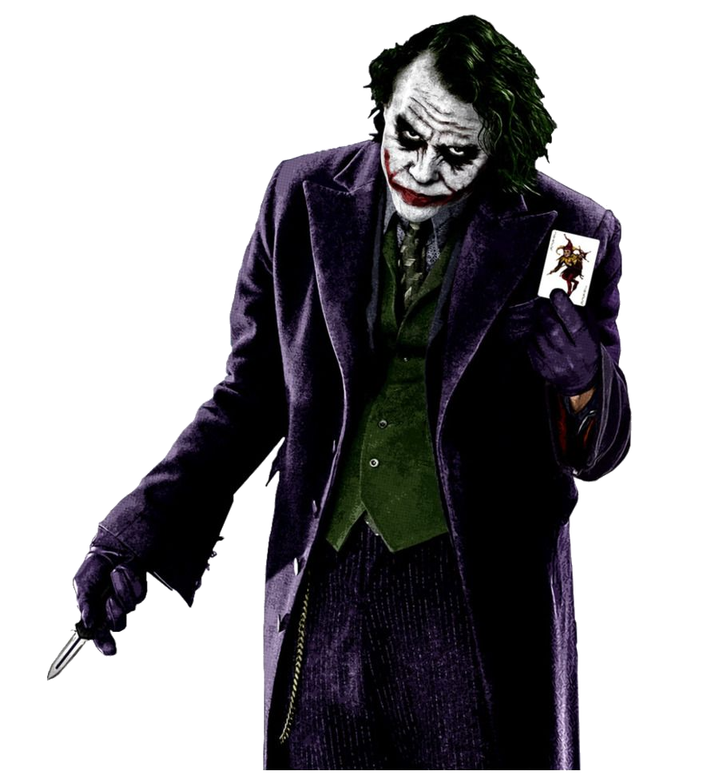
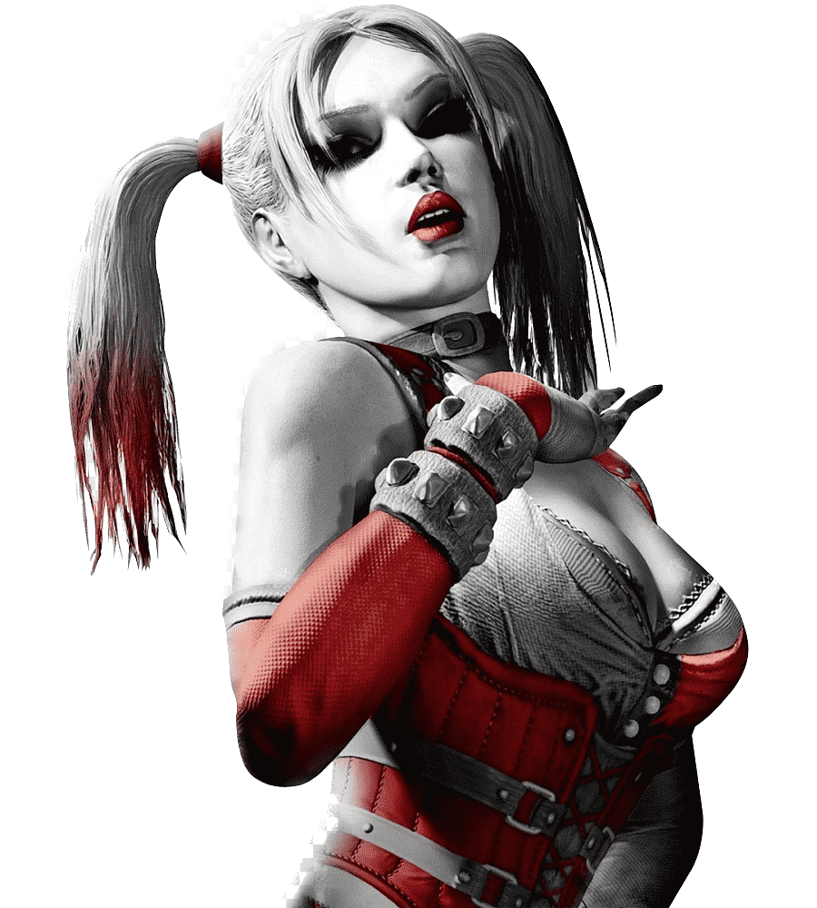
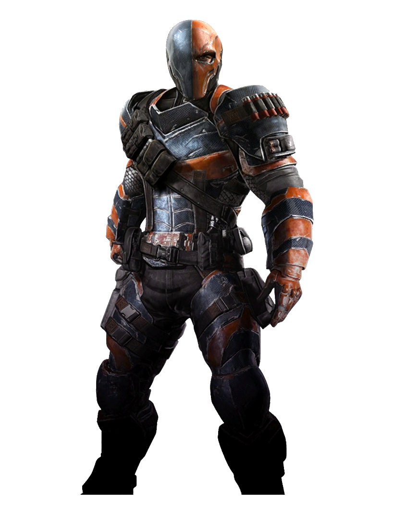
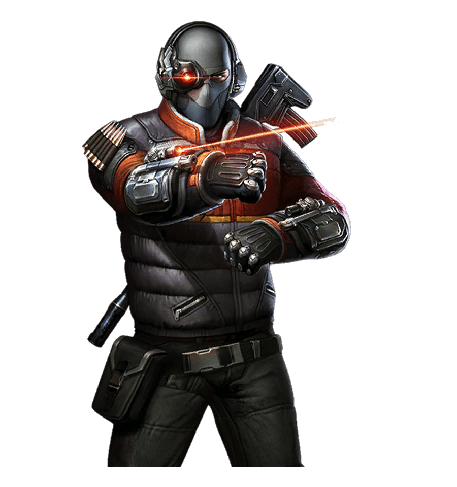
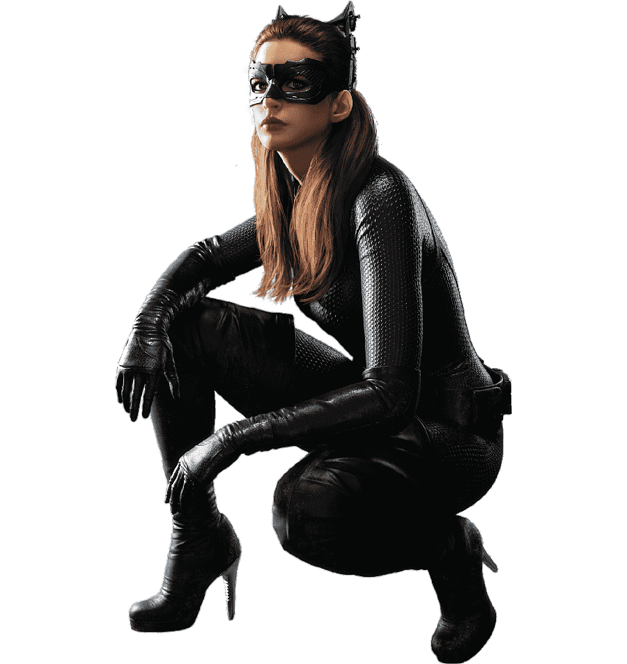
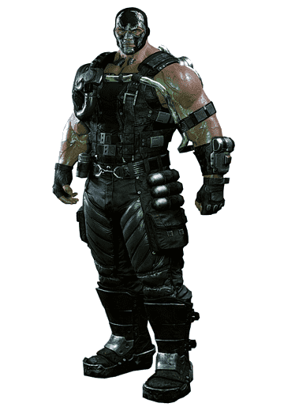

| Imagen. |
ALIAS |
ESTATURA |
PESO |
Nombre Real |
Primera aparición |
Historia |
|  |
GUASON/JOKER |
1,82 m |
73 kg. |
Jack Napier |
Batman № 1 (1940) (como como un villano común) Detective Comics №168 |
En esta historia, el Joker aparece retratado como un antiguo empleado de una fábrica de productos químicos que decide abandonar su trabajo para seguir una carrera como comediante.
Sin embargo fracasa y en un intento de mantener a su esposa embarazada, decide asaltar la fabrica en la que él trabajaba antes.
No obstante antes del asalto recibe la noticia de la muerte de su mujer, pero los criminales lo convencen de llevar acabo el robo a pesar de.
Todo iba bien hasta que aparece batman y el joker tropieza y caé en lo que serian desechos radioactivos y sale transformado en el peligroso villano que representa el símbolo del hartazgo contra cualquier poder, ya sea de manera precisa o en abstracto. Porque no se trata de crear el caos, sino de que se les oiga.
|
|  |
HarleyQuin / Princesa Payasa del Crimen y el Caos Cupido del Crimen Holly Holiday Jessica Seaborn GG Harlin |
1,70 m |
63,5 kg |
Harleen Frances Quinzel |
11 de septiembre de 1992.
Harley no nació en las páginas de un cómic. Fue en el capítulo número 22 de Batman: la serie animada.
|
La doctora Harleen Frances Quinzel era una psiquiatra del asilo Arkham cuando se enamoró del Joker, le ayudó a escapar y se convirtió en la villana Harley Quinn. |
|  |
Deathstroke |
1,98 m |
110 kg |
Slade Joseph Wilson |
The New Teen Titans # 2 en diciembre de 1980. |
A los 16 años de edad, Slade Wilson decidió entrar en el ejército, escapó de casa y mintió sobre su edad para poder ser aceptado en el ejército. Pronto mostró un gran talento muy superior al de cualquier otro soldado y fue promovido rápidamente una y otra vez hasta que su excelente reputación lo llevó a ser reconocido por Adeline Kane, una instructora militar, con quien más tarde comenzaría una relación amorosa y con quien se casaría con el tiempo. Poco después del nacimiento de su primer hijo, Grant Wilson, el mismo Slade se ofreció como voluntario para un experimento médico para el ejército diciéndole que era una prueba para defenderse del suero de la verdad (más tarde se revelaría que fue una prueba para crear un proyecto de super-soldados). |
|  |
Deadshot |
1,86 m |
92 kg |
Floyd Lawton |
Batman Nº 59 (junio/julio de 1950) DC Comics |
Cuando era niño, Lawton idolatraba a su hermano. Su madre convenció a su hermano de matar a su padre, siendo luego encerrado en prisión, alejándolo de Floyd. Pero este, decidiéndose a salvar a su hermano de un futuro sombrío, tomó su rifle. Fuera de la prisión, estaba sentado en la rama de un árbol, esperando a los guardias, cuando esta se rompió y Floyd le disparó accidentalmente a su hermano en la cabeza. Lawton sin querer le mató con el arma que lo había salvado de su padre. |
 |
Hiedra Venenosa |
1,75 m |
60 kg |
Pamela Lillian Isley |
Batman #181 (junio de 1966 |
La doctora Pamela Lillian Isley era una botánica de Seattle, con grandes conocimientos acerca de las plantas. Sin embargo, el científico Jason Woodrue (alias el Hombre Florónico) experimentó con ella, inyectándole toxinas en la sangre para que hacerla inmune a cualquier tipo de venenos, virus y bacterias. Sin embargo, esto le dio otras habilidades. Woodrue escapó de las autoridades, abandonando a Pamela en el hospital durante seis meses. Enfurecida por la traición, Pamela sufrió violentos y bruscos cambios de humor. Después de que su novio tuviera un accidente de coche, Pamela abandonó sus estudios y dejó Seattle con destino a Gotham. |
|  |
Catwoman. |
1,74 m |
59.4 kg |
Selina Kyle. |
Batman Nº 1 (primavera de 1940) DC Comics |
Cuando ella estaba tratando de robar en una tienda fue detenida por un grupo de guardias de seguridad y uno de ellos la llamó "Catwoman". A Selina le encantó el nombre y, por tanto, así nació Catwoman. |
|  |
BANE/El Hombre que quebró al murciélago |
2,05 m |
135 kg |
Edward Dorrance |
Batman: La venganza de Bane #1 (enero de 1993) |
Nació para cumplir la condena de su padre. La infancia de Bane y su vida adulta transcurrieron detrás de las paredes de Peña Duro, una infame prisión ubicada en Santa Prisca. Aunque encarcelado, sus habilidades naturales le permiten desarrollar habilidades extraordinarias dentro de los muros de la prisión. Lee tantos libros como puede tener en sus manos, moldea su cuerpo en el gimnasio de la prisión, y aprende a pelear sin piedad dentro. A pesar de sus circunstancias, Bane se las ingenio para conseguir profesores que le enseñaran, como un anciano sacerdote jesuita, bajo cuya tutela al parecer recibe una educación clásica. Pero a la edad de ocho años, Bane lo apuñala. |